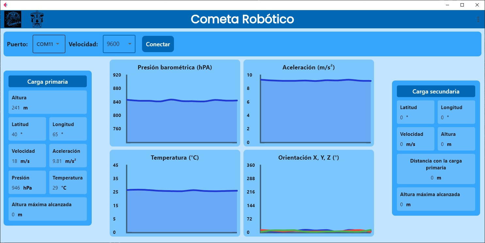
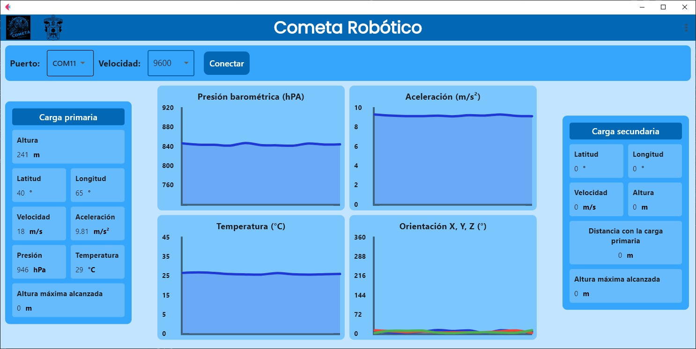

Overview
This graphical user interface (GUI) was developed as a ground station for a CanSat contest. Its main objective is to establish serial communication with the CanSat’s microcontroller in order to receive, process, and visualize the telemetry collected during its mission. The application provides a clear and precise display of the data, allowing the team to efficiently monitor the satellite’s status.
Technologies used
Key features
Automatic Port Detection: The application scans and detects the COM port connected to the microcontroller, simplifying the initial setup.
Real-Time Data Visualization: Dynamic charts update in real time to monitor key variables such as altitude, temperature, and pressure.
Accurate Data Panel: Displays precise numerical telemetry values, complementing the graphical information.
Graph Control: Intuitive buttons allow the user to start or stop data visualization, making it possible to pause analysis at critical moments.
Calibration Function (Set Zero): A “zeroing” button recalibrates altitude and other relative values, ensuring accurate measurements during the mission.